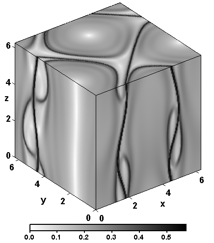
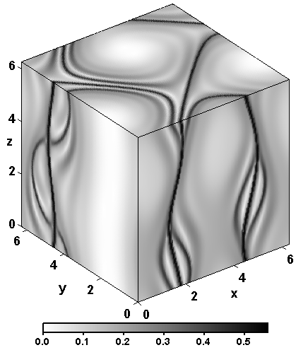
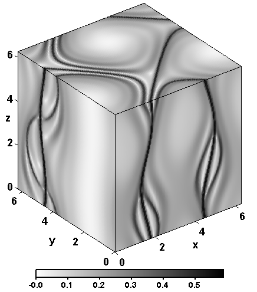
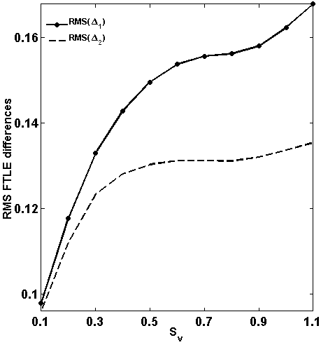
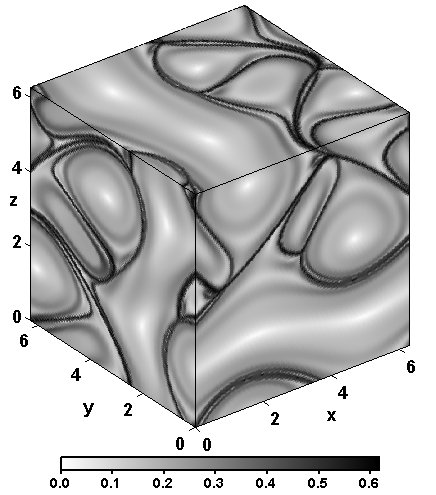
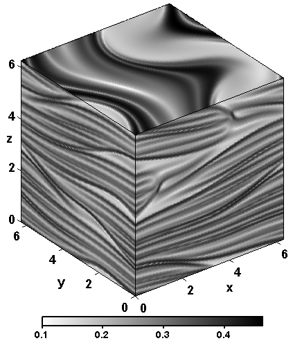
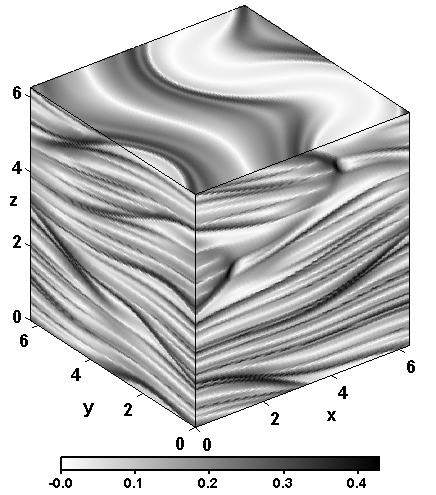

| 3D FTLE computed from 3D Trajectories:  | 3D FTLE computed from 2D Trajectories:  | 2D FTLE computed from 2D Trajectories:  |
| ------------- | ||
| RMS Plot:  |
| 3D FTLE computed from 3D Trajectories:  | 3D FTLE computed from 2D Trajectories:  | 2D FTLE computed from 2D Trajectories:  |